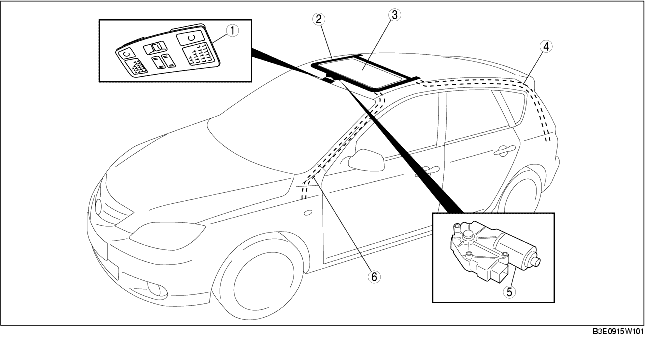

.
|
1
|
Contacteur de toit ouvrant
(voir la section DÉPOSE/REPOSE DE CONTACTEUR DE TOIT OUVRANT.)
(voir la section INSPECTION DE CONTACTEUR DE TOIT OUVRANT.)
|
|
2
|
Unité de toit ouvrant
(voir la section DEPOSE/REPOSE D'UNITE DE TOIT OUVRANT.)
(voir la section DEMONTAGE/REMONTAGE D'UNITE DE TOIT OUVRANT.)
|
|
3
|
Panneau de vitre
(voir la section DÉPOSE/REPOSE DE PANNEAU DE VITRE.)
(voir la section REGLAGE DE PANNEAU DE VITRE.)
|
|
4
|
Flexible de purge arrière
(voir la section DEPOSE DE FLEXILE DE PURGE ARRIERE.)
(voir la section REPOSE DE FLEXILE DE PURGE ARRIERE.)
|
|
5
|
Moteur de toit ouvrant
(voir la section DEPOSE/REPOSE DE MOTEUR DE TOIT OUVRANT.)
(voir la section INSPECTION DE MOTEUR DE TOIT OUVRANT.)
|
|
6
|
Flexible de purge avant
(voir la section DEPOSE DE FLEXIBLE DE PURGE AVANT.)
(voir la section REPOSE DE FLEXILE DE PURGE AVANT.)
|